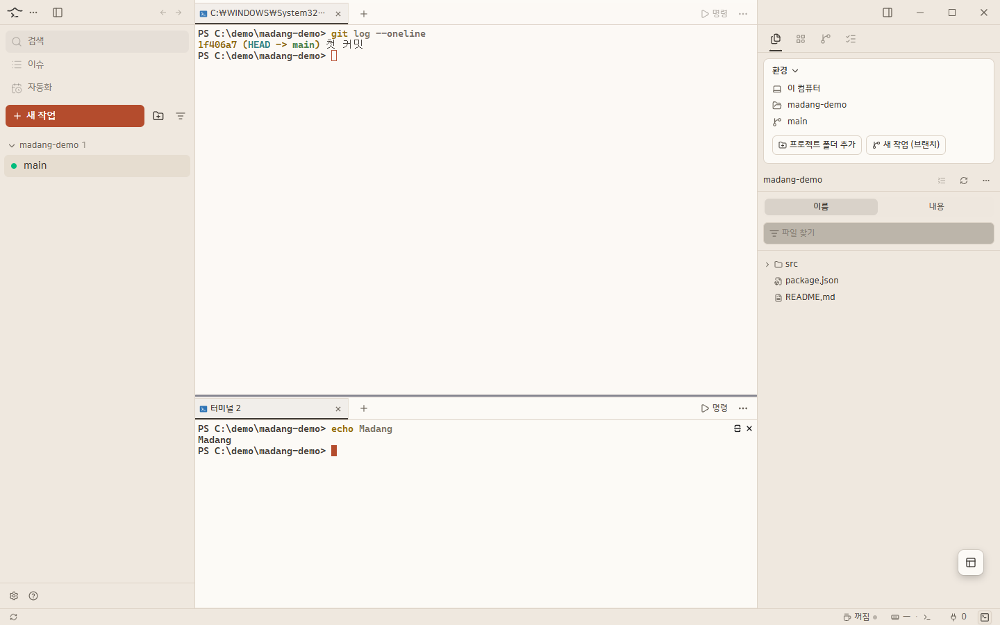
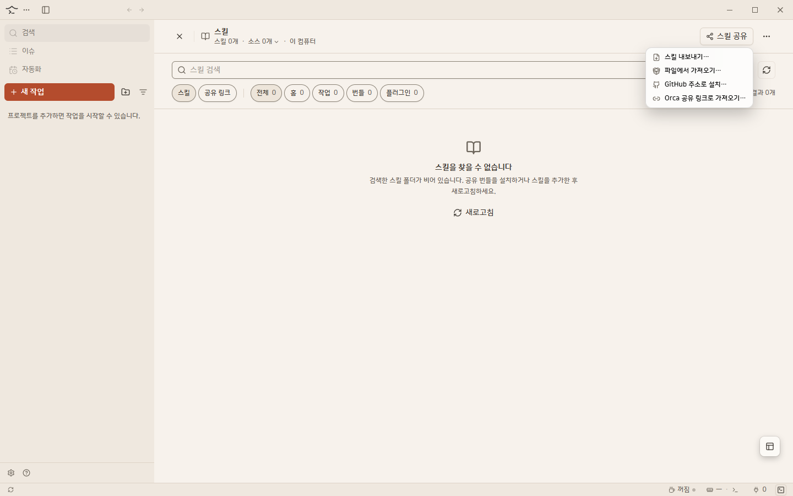
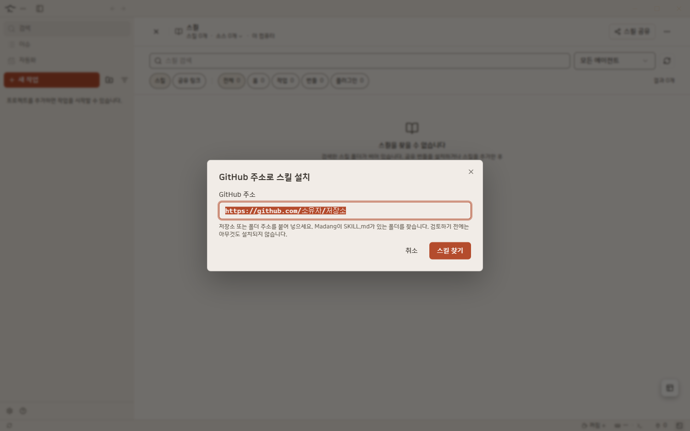
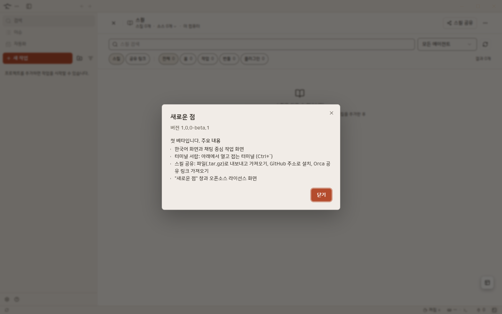
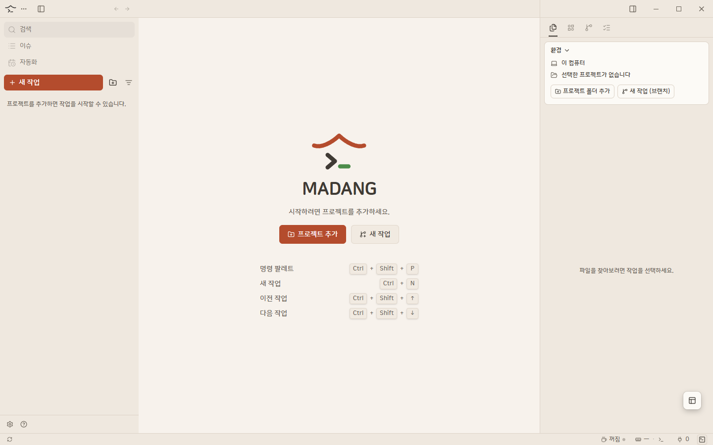
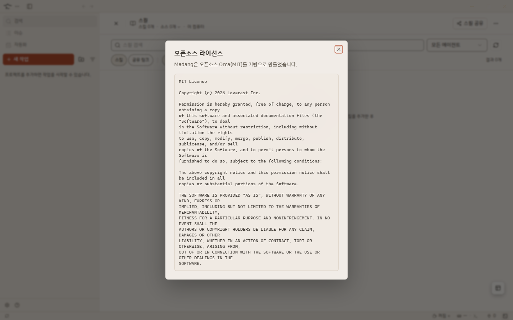

창을 여러 개 띄우지 않고, 일하는 흐름 그대로 이어서 쓸 수 있어요.
메뉴·안내·오류 문구를 한국어로 보여 줘요.
프로젝트 폴더를 추가하고, 작업 공간을 만들어 나눠서 일해요.
아래에서 열고 접는 터미널이에요. 접었다 열어도 같은 터미널이 그대로 있어요.
작업 공간마다 터미널을 열어 Claude·Codex 같은 에이전트를 실행해요.
파일(.tar.gz)로 내보내고 가져오고, GitHub 주소나 Orca 공유 링크로 설치해요. 설치 전에 내용을 확인하는 창이 항상 떠요.
업데이트하면 바뀐 점을 앱에서 바로 보여 줘요.
크림색 바탕에 한옥 지붕색 포인트. 회색빛 테마도 고를 수 있어요.
도움말 메뉴에서 사용한 오픈소스의 전체 고지를 볼 수 있어요.
에이전트 하나가 총괄이 되어 일을 나누고, 다른 에이전트가 일한 결과를 하나로 모아 줘요. 기본은 꺼져 있어요.
협업: 로그인 화면을 만들어 줘연결된 에이전트(Claude·Codex 등)에 맞게 총괄이 역할을 정해요.
워커 세션은 지시서만 받으면 일할 수 있어요.
워커가 끝낸 일을 총괄이 모아서 한 번에 보고해요.
세션의 첫 입력만 봐요. 대화 중간에 "협업"이라는 말이 나와도 규칙은 켜지지 않아요. 스위치가 꺼져 있으면 평소처럼 동작하고, "협업 규칙이 꺼져 있다"고 한 줄로 알려 줘요. 협업 규칙은 1.0.1부터 정상 동작해요 (1.0.0에서는 켜도 적용되지 않았어요).
실제 Madang 화면이에요.






Windows 10 · 11 에서 쓸 수 있어요.
최신 버전부터 보여 줘요.
왼쪽 목록에서 작업 이름이 작아져 에이전트 리스트 앞에 붙어요.
협업 규칙 스위치가 적용되지 않던 문제를 고치고, 켤 때 사용법 안내 창을 넣었어요.
8단계 둘러보기, 한글 글꼴 빈칸 수정, Chat 정상 동작, 협업 스위치 추가(이 버전에서는 미동작).
Claude 데스크톱 세션을 Chat 탭으로 열기, 대화 목록에 이슈·PR 제목 표시, 사용량 조회 켜기/끄기.
한국어 화면, 터미널 서랍, 스킬 공유, "새로운 점" 창, 오픈소스 라이선스 화면.
Madang은 Orca(MIT 라이선스, Copyright (c) 2026 Lovecast Inc.)를 기반으로 만들었어요. 전체 고지는 앱의 도움말 → "오픈소스 라이선스"에서 볼 수 있어요. 이 저장소는 배포 전용이라 설치 파일과 안내만 있어요.